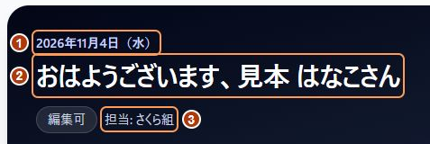
- 日付今日の日付と曜日を確かめます。
- 自分の名前あいさつの後に、自分の名前が出ているか確かめます。
- 担当クラス「担当」の横に、自分が受け持つクラスが出ているか確かめます。
職員としてログインすると「ホーム」が開きます。今日の出欠や予定、職員からの連絡をここで確かめます。

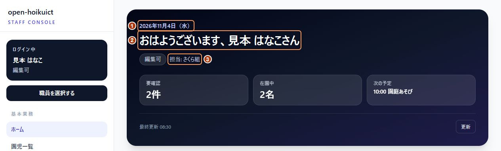
「担当クラスが設定されていません」と出たら、園の管理者に担当クラスを確認してください。
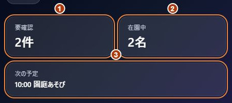
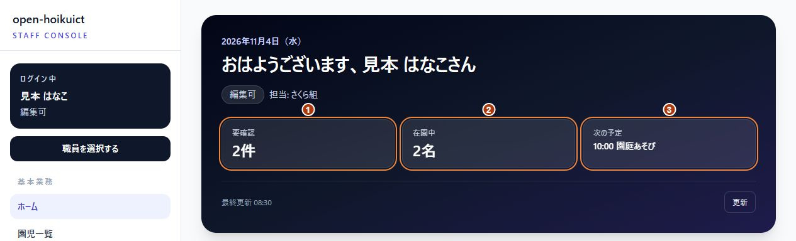
「最終更新」の横に、最後に読み込んだ時刻が出ます。「更新」を押すと、新しい情報を読み込みます。「取得不可」と出たときも、もう一度「更新」を押してください。
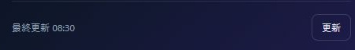
「要確認一覧を開く」を押します。ホーム上部の「要確認」と同じ一覧が開きます。
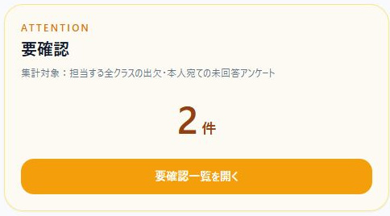
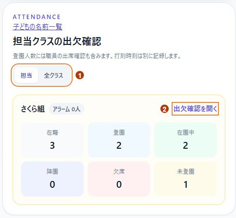
「未登園」は、登園も欠席もまだ確認できていない人数です。
登園は今日園に来た人数です。登園の打刻があったお子さんと、職員が出席を確認したお子さんを含みます。在園中は、そのうち今も園にいる人数です。お迎えで降園を記録すると、「登園」の人数はそのままで、「在園中」が減り、「降園」が増えます。
「在籍」はクラスにいる園児の総数、「欠席」はお休みを確認した人数です。「アラーム」に人数が出ているときは、「出欠確認を開く」から内容を見てください。
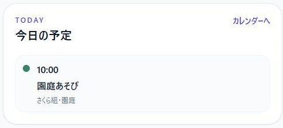
「今日の予定」で時刻と予定の名前を見ます。この例では、園庭あそびが10時からあります。
カレンダーでその日の予定を見るときは「カレンダーへ」を押します。ホーム上部の「次の予定」が「予定なし」でも、終日の予定はこの欄で確認できます。
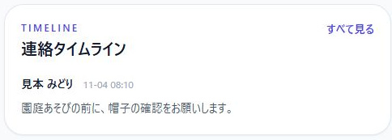
「連絡タイムライン」に新しい投稿が並びます。読みたい投稿を押すと、その連絡の続きや返信を読めます。
ほかの投稿も見たいときは「すべて見る」を押します。
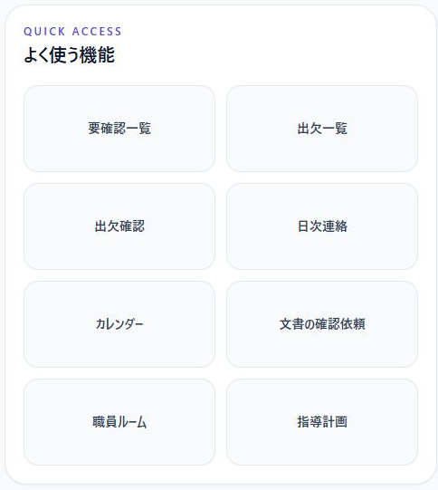
ホームの下にある「よく使う機能」で、やりたいことに合う名前を押します。
自分宛てに届くと、ホームの上の方に次の欄が出ます。
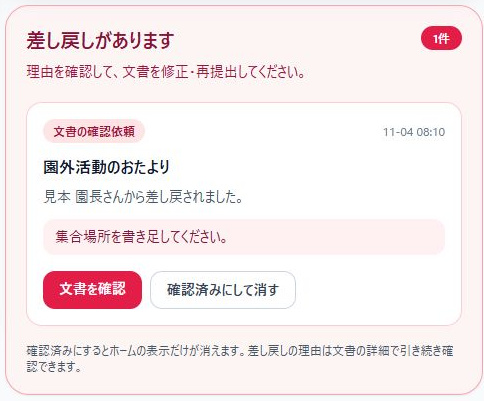
直してほしいところを読み、「文書を確認」を押します。文書を直したら、もう一度提出します。
「確認済みにして消す」を押すと、ホームからこの表示が消えます。差し戻しの理由は、あとから文書の詳細で読めます。
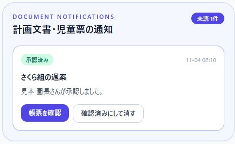
文書の名前と、確認の依頼や結果を読みます。この例の「承認済み」は、週案の承認が済んだという意味です。
文書を開くときは「帳票を確認」を押します。読み終えた通知をホームから消すときは「確認済みにして消す」を押します。
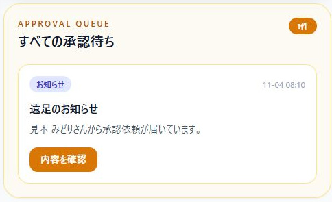
ホーム上部の「承認待ち」を押すと、「すべての承認待ち」へ移ります。依頼の名前を見て「内容を確認」を押します。
依頼がないときは「現在、承認待ちの依頼はありません。」と出ます。
「保護者端末の接続状況」を押すと、受付端末の状態を確認できます。「2分以上応答がありません」と出たときは、表示された端末の通信・電源・画面を確かめてください。
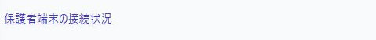